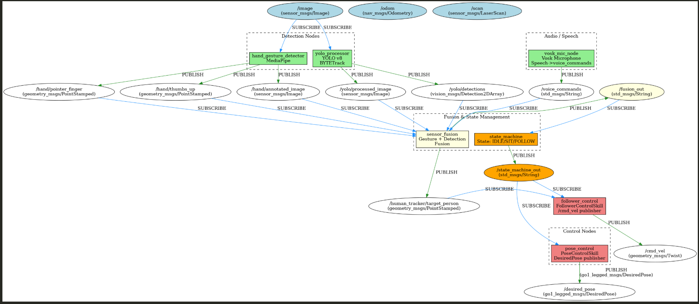

Human-Robot Interaction with Unitree Go1
ROS2 • Python • YOLOv8 • MediaPipe • Vosk • Docker
A comprehensive Human-Robot Interaction system for the Unitree Go1 quadruped robot developed in the HRI (Human-Robot Interaction) module at HSLU. The system enables natural multimodal interaction through hand gestures, voice commands, and visual person tracking. The robot can follow a designated person, respond to German voice commands ("Sitz", "Auf", "Bei Fuß"), and perform various poses using an advanced ROS2 node architecture with sensor fusion.
Demo Videos
Watch the Unitree Go1 in action demonstrating person following and sitting functionality:
Person Following Demonstration
Sitting Functionality
System Architecture
The system is built on ROS2 (Robot Operating System 2) and consists of multiple interconnected nodes that work together to create a seamless human-robot interaction experience. All custom nodes run on a workstation and communicate with the Unitree Go1 robot over network topics. The robot provides three key topics: /image (camera feed), /desired_pose (for body positions), and /cmd_vel (for movement commands).

Complete ROS2 Node Architecture - All custom nodes run on workstation hardware (click to enlarge)
State Machine Design
The sensor fusion node publishes four action commands: SIT, UP, FOLLOW, and STOP_FOLLOWING. The state machine processes these commands and updates its internal state, publishing the current state to /state_machine_out. The state machine implements strict transition rules to ensure system stability:

State Machine Transitions: IDLE → FOLLOW/SIT, FOLLOW → IDLE, SIT → IDLE (click to enlarge)
- IDLE: Default state. Robot performs subtle idle animations. Accepts FOLLOW (transitions to FOLLOW state) and SIT commands (transitions to SIT state).
- FOLLOW: Robot actively tracks and follows the designated person. Only accepts STOP_FOLLOWING command to return to IDLE.
- SIT: Robot assumes sitting position with interpolated joint movements. Only accepts UP command to return to IDLE.
Invalid transitions (e.g., STOP_FOLLOWING while in SIT state) are rejected to prevent confusion from sensor noise. An internal flag prevents duplicate publications of the same state. This simple but robust design ensures that only valid state changes trigger actions, with all transitions normalized and validated before execution.
ROS2 Nodes
The system consists of seven specialized ROS2 nodes that handle perception, decision-making, and control. Below follows a short description of each node:
1. YOLO Processor (yolo_processor.py)
Receives the camera feed and performs YOLOv8 inference with BYTETrack tracking. Each detected person receives a stable tracking ID that persists even during brief occlusions. The node publishes bounding box coordinates and confidence scores as vision_msgs/Detection2DArray on /yolo/detections. An annotated image with boxes and IDs is published to /yolo/processed_image for debugging. Configurable confidence thresholds allow tuning between precision and recall. BYTETrack ensures ID stability, making the follow behavior smooth and preventing tracking jumps.
2. Hand Gesture Detector (hand_gesture_detector.py)
Processes the camera stream using MediaPipe Hands to extract landmarks from both hands. The node detects pointing gestures (index finger raised) and thumbs-up signals, publishing their pixel coordinates as geometry_msgs/PointStamped to /hand/pointer_finger and /hand/thumbs_up. An annotated image with skeleton lines, markers, and debug colors is published to /hand/annotated_image. Extensive logging provides insight into detected gestures and coordinates. GPU-accelerated MediaPipe keeps latency low even when tracking multiple hands simultaneously.
3. Voice Recognition (vosk_mic_listener)
Forms the audio front-end of the system. At startup, it searches all available microphones and prefers the Samson Q2U USB microphone specified in config.py. A local Vosk speech model is loaded with configurable grammar, sample rate, and model path via ROS parameters. Audio samples are captured with PyAudio, processed through KaldiRecognizer, and published as final transcripts and partial strings to /voice_commands_log for debugging.
The node recognizes multiple wake words (e.g., "Snoopy", "Thomas"). Upon wake word detection, a 10-second command window (awaiting_command) is activated. Within this window, the system searches for phrases defined in COMMANDS_AFTER_WAKE and publishes the corresponding normalized token (e.g., dog_up, dog_sit) as std_msgs/String to /voice_commands. This architecture ensures voice commands arrive deterministically and with priority at the sensor fusion node.
4. Sensor Fusion (sensor_fusion.py)
The brain of the system that combines hand gestures, voice commands, and person detections into unified action recommendations. It subscribes to /yolo/detections, /hand/pointer_finger, /hand/thumbs_up, /voice_commands, and YOLO image output to link geometric and semantic information.
Gesture Duration Filtering: When a person points at a detected person for more than 3 seconds, the corresponding bounding box ID is saved as the tracked target. Target coordinates are published to /human_tracker/target_person. Similarly, a sustained thumbs-up (3+ seconds) triggers STOP_FOLLOWING. Voice commands like "Sitz" or "Auf" are processed with highest priority, overriding gestures.
All determined actions (FOLLOW, STOP_FOLLOWING, SIT, UP) are published as std_msgs/String to /fusion_out, providing the state machine with simple control signals. Timestamps, timeouts, and buffers prevent brief gesture flicker from causing false decisions. A tracking ID system ensures only the selected person triggers commands.
5. Follower Control (follower_control.py)
Converts the target person stream from sensor fusion into concrete movement commands. The node subscribes to /state_machine_out and only activates in FOLLOW state. Via /human_tracker/target_person, it receives the target's pixel position and box height as a distance proxy. Horizontal deviation from image center determines desired angular velocity, while box height regulates distance. A geometry_msgs/Twist message is published to /cmd_vel for the Unitree motion stack; when FOLLOW is inactive, zero velocity is immediately sent.
PID Controllers: Two PID controllers handle linear and angular channels. Gains (kp_*, ki_*, kd_*) and limits like max_linear_speed are ROS parameters for field adjustment. The linear controller is limited to forward motion (0 to max), preventing backward movement. The angular controller has symmetric limits (±max_angular_speed). Both implement anti-windup through integral saturation and reset on state changes via reset_controllers().
Watchdog Timer: A target_timeout monitors whether sensor fusion continues providing target updates. If updates cease for longer than configured, the robot stops, controllers reset, and the system waits for a new bounding box ID from sensor fusion.
6. Pose Control (pose_control.py)
Translates abstract state machine states into concrete body poses for the Go1. When a new state is published to /state_machine_out, pose_control executes the corresponding pose or animation. In IDLE state, a subtle idle loop runs to prevent the robot from appearing rigid. Transitioning to SIT triggers an interpolation sequence that smoothly moves joints into sitting position. For FOLLOW state, the robot transitions back to neutral stance, providing a stable base for the motion controller. All pose commands are published as go1_legged_msgs/DesiredPose to /desired_pose. A small animation engine with timer handles looping and sequence completion.
7. State Machine (state_machine.py)
Manages the robot's behavioral states by processing fusion output and enforcing valid transitions. The state machine accepts only four normalized action strings (FOLLOW, STOP_FOLLOWING, SIT, UP) and checks them against a strict transition table. Invalid combinations are rejected to prevent noise from causing side effects. An internal flag prevents duplicate publications—only actual state changes are published to /state_machine_out.